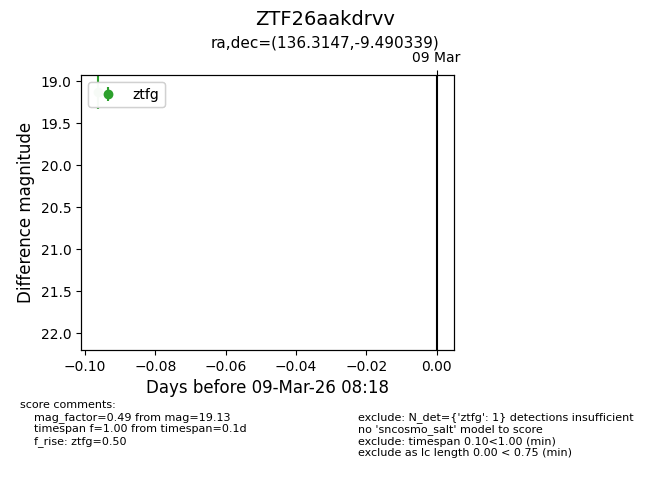
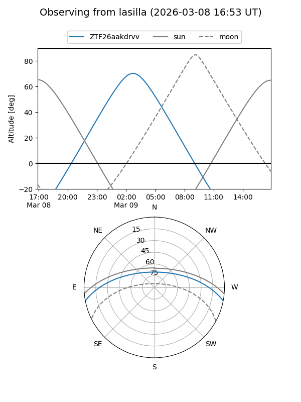
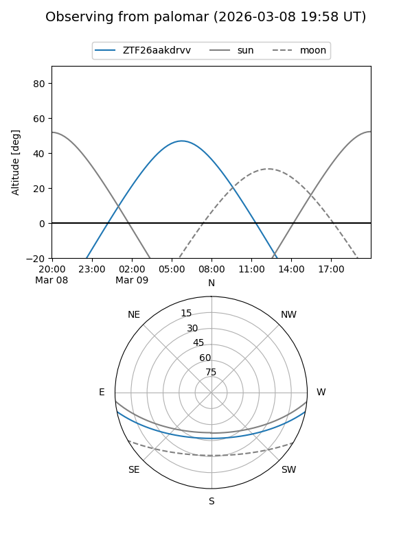

ZTF26aakdrvv
Target ZTF26aakdrvv at 2026-03-09 08:20
Aliases and brokers:
FINK: link
Lasair: link
ALeRCE: link
alt names
ZTF26aakdrvv (ztf,fink_ztf)
Coordinates:
equatorial (ra, dec) = 136.3147,-9.49034
equatorial (HMS+DMS) = 09:05:15.53,-09:29:25.22
galactic (l, b) = (238.5553,+24.12565)
Flags:
Photometry:
last ztfg=19.13
1 ztfg detections
Lightcurve

Visibility


Additional plots